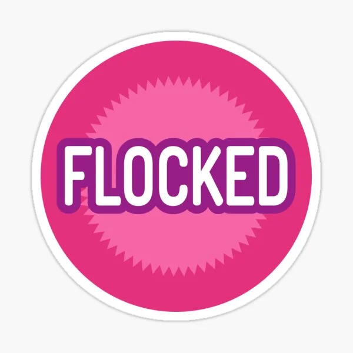

¡BIENVENIDO AL UNIVERSO FUNKO!
En Funkoverse
En FunkoVerse, hemos creado un espacio dedicado exclusivamente a los amantes de los Funko Pop, esas pequeñas figuras que representan mucho más que un simple coleccionable. Aquí podrás descubrir todo lo relacionado con estas icónicas figuras y las últimas novedades del mercado.
¿Sabías que cada Funko cuenta una historia única?
Estos pequeños personajes encapsulan décadas de cultura pop, entretenimiento y recuerdos personales. Ya seas un coleccionista experto que busca completar su estantería con piezas raras o alguien que acaba de empezar, en esta página encontrarás todo lo necesario para explorar, disfrutar y aprender sobre esta increíble afición. FunkoVerse no es solo una web, es una comunidad. Únete a nosotros mientras exploramos este fascinante mundo lleno de sorpresas y maravillas.
Exclusividad Funko
El universo Funko ofrece productos variados, desde figuras hasta artículos para el hogar. Dentro de los Pop!, ha crecido la tendencia de buscar figuras con pegatinas exclusivas, ya que estas pueden aumentar significativamente su valor. Funko detallará los diferentes tipos de pegatinas que existen en el mercado.
Las Pegatinas en el Mundo Funko: Un Detalle que Marca la Diferencia
El universo Funko Pop es famoso por sus figuras y los detalles que las hacen únicas, como las pegatinas en las cajas. Estas etiquetas no solo identifican ediciones especiales, sino que aumentan la exclusividad de las figuras. En este análisis, exploraremos las pegatinas más codiciadas, como Chase, Flocked, Exclusive, y las de eventos como Comic-Con.
1. Chase: La Joya del Azar
Las figuras Chase son versiones especiales de las ediciones regulares y se producen en cantidades limitadas
● Diseño: Pequeñas modificaciones como cambios de color, accesorios, poses o expresiones.
● Rareza: Muy valoradas por coleccionistas debido a su baja disponibilidad.
2. Chase Glow in the Dark: La Magia Brillante
Variante Chase que, además de su exclusividad, brilla en la oscuridad.
●Características: Mismo diseño especial del Chase, pero con pintura fosforescente.
● Efecto: Absorbe luz y brilla en la oscuridad, resaltando detalles únicos.
3. Flocked: La Textura que Marca la Diferencia
Figuras con una capa aterciopelada que imita piel o pelaje, dándoles un toque más realista.
●Diferencia: Suavidad y textura especial en personajes de animales o criaturas.
● Pegatina Flocked: Indica que la figura tiene este acabado exclusivo.
4. Glow in the Dark: Brillo que Cautiva
La pegatina Glow in the Dark identifica que tienen la capacidad de brillar en la oscuridad.
● Se usa en ojos, trajes, armas o detalles místicos.
● Muy presente en superhéroes, villanos y seres de ciencia ficción.
5. Exclusive: Ediciones Especiales en Tiendas Seleccionadas
Figuras que solo se venden en ciertas tiendas como Hot Topic, GameStop, Target o Walmart.
● Diferencias: Pueden tener colores, accesorios o poses distintas a la versión normal
●Dificultad de Obtención: No están disponibles en todas las tiendas, aumentando su exclusividad
6. Diamond Collection: El Encanto del Brillo
Figuras con un acabado brillante y reluciente, dándoles un aspecto más llamativo.
● Estilo: Suelen estar decoradas con purpurina o materiales reflectantes.
●Valor Estético: Aportan un toque premium y visualmente atractivo a cualquier colección.
7. Summer Convention: Exclusividad Veraniega
Figuras lanzadas en convenciones de verano, como la San Diego Comic-Con (SDCC).
●Edición Limitada: Solo se producen en cantidades reducidas y están disponibles por tiempo limitado.
●Variedad de Personajes: Pueden incluir héroes, anime, cine y series populares.
8. Comic-Con: El Santo Grial del Coleccionista
Figuras exclusivas de convenciones como la San Diego Comic-Con (SDCC) o la New York Comic-Con (NYCC).
● Valor: Son de las más raras y pueden alcanzar precios altos en el mercado secundario.
●Características: Diseños únicos que no se encuentran en ninguna otra versión.
Las Pegatinas y el Arte de Coleccionar
Las pegatinas en las cajas de Funko Pop no son solo decorativas; indican rareza, exclusividad y valor. Representan ediciones especiales, variantes como Chase, GITD o Flocked, y eventos como la Comic-Con. Para los coleccionistas, cada pegatina conecta la figura con un momento, una tienda o una convención, haciendo que cada pieza sea aún más especial.
Aquí vemos 2 ejemplos de Funko con la pegatina de la Comic-con: